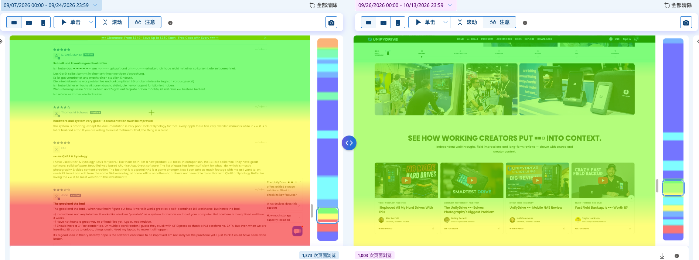

十月运营周报 · 10/9 至今
本期为 10/9–10/13，对比期为 10/4–10/8，均为 5 个完整日。
一、本期经营结果
| 指标 | 本期 10/9–10/13 | 对比期 10/4–10/8 | 变化 |
|---|---|---|---|
| 总销售额 | $10,041.96 | $2,293.84 | +337.8% |
| 订单量 | 11 | 9 | +22.2% |
| AOV | $910.80 | $252.66 | +260.5% |
| 访问量 | 5,738 | 3,908 | +46.8% |
| 在线商店转化率 | 0.174% | 0.230% | -24.3% |
本期增加 2 单，客单价明显回升。销售额增长主要由 5 单 UP6 高客单价成交带动；与此同时，访问量增长 46.8%，但转化率下降 24.3%，说明新增流量的成交效率仍需改善。
二、产品与流量变化
| 产品 | 本期商品毛销售额 | 本期包含该产品的订单 | 对比期包含该产品的订单 |
|---|---|---|---|
| UP6 | $7,995.00 | 5 | 0 |
| UT2 | $2,483.79 | 6 | 6 |
| UT2 保护套 | $102.70 | 4 | 3 |
| UT2 收纳包 | $39.99 | 1 | 0 |
| UT2 转接头套装 | $0 | 0 | 1 |
| UT2 电池 | $0 | 0 | 2 |
UP6 占本期商品毛销售额约 75%，是销售恢复的主要产品贡献。对比期共 9 张独立订单，其中 6 张包含 UT2、1 张仅购买转接头套装、2 张仅购买电池；3 个保护套均与 UT2 同单，并非额外订单。
产品本期为 10/9–10/13，对比期为 10/4–10/8。产品订单按“订单中是否包含该产品”统计，同一张订单可同时计入 UT2、保护套等多行，不能将各行相加作为总订单量。
| 来源 | 本期完整日访问 | 对比期访问 | 增减 |
|---|---|---|---|
| 3,439 | 378 | +3,061 | |
| 316 | 1,345 | -1,029 | |
| 直接访问 | 1,157 | 1,247 | -90 |
| 612 | 633 | -21 | |
| YouTube | 104 | 183 | -79 |
访问增长主要来自 Facebook，较对比期增加 3,061 次；Instagram 同期减少 1,029 次。来源结构变化明显，需要继续核对 Facebook 新增访问的加购和购买效率。
三、Meta Ads 投放表现
统计期间：10/9–10/13，共 5 天；来自 Meta 广告系列导出。
转化广告
| 广告系列 | 花费 | 加购 | 发起结账 | 购买 | 转化价值 | ROAS |
|---|---|---|---|---|---|---|
| UP6 再营销 | $217.18 | 5 | 1 | 1 | $1,449.00 | 6.67x |
| UT2 再营销 | $247.08 | 17 | 11 | 1 | $322.18 | 1.30x |
| UP6 AudienceTest | $193.43 | 1 | 0 | 1 | $399.00 | 2.06x |
| UT2 299Test | $635.96 | 29 | 16 | 0 | $0 | — |
| 转化广告合计 | $1,293.65 | 52 | 28 | 3 | $2,170.18 | 1.68x |
新页面流量测试
| 广告系列 | 花费 | 落地页浏览 | 单次浏览成本 | 加购 | 发起结账 |
|---|---|---|---|---|---|
| UP6 新页面流量测试 | $235.06 | 2,537 | $0.09 | 4 | 0 |
| UT2 新页面流量测试 | $114.81 | 518 | $0.22 | 14 | 4 |
| 流量测试合计 | $349.87 | 3,055 | $0.11 | 18 | 4 |
加购、结账和购买均为平台归因事件次数。
四、Google Ads 投放表现
统计期间：10/9–10/13，共 5 天；来自 Google Ads 广告系列报告。
| 广告系列 | 花费 | 加购 | 转化 | 转化价值 | ROAS | CPA | CTR |
|---|---|---|---|---|---|---|---|
| UT2 Search | $231.06 | 6 | 2 | $3,198.00 | 13.84x | $115.53 | 7.95% |
| UP6 Search | $331.17 | 9 | 1 | $1,599.00 | 4.83x | $331.17 | 4.79% |
| 搜索广告合计 | $562.23 | 15 | 3 | $4,797.00 | 8.53x | $187.41 | 5.87% |
Google 的转化和加购为平台归因数据，不与 Meta 或 Shopify 订单直接相加。
五、UP6 页面改版初步反馈
UP6 于 9/25 完成页面改版，补充实际使用场景和创作者评测内容，让用户在了解产品参数之外，也能看到产品如何用于真实工作流程。
| GA4 · UP6 页面指标 | 改版前 9/6–9/24 | 改版后 9/26–10/14 | 变化 |
|---|---|---|---|
| 每位活跃用户的平均互动时长 | 9 秒 | 16 秒 | +7 秒 / 约 +77.8% |
UP6 页面的平均互动时长增加，说明用户在页面上的阅读投入有所提升，为保留和继续优化场景展示、创作者评测内容提供了初步依据。
来源：GA4「网页和屏幕」中 /products/unifydrive-up6 的截图。改版后区间包含截图当天 10/14，完整日对比仍需复核。

内容反馈：热图展示了旧版评价区与新版场景、视频评测区的关注分布，新版评测区域有用户停留关注。两侧模块位置和内容不同，颜色不能直接用于判断提升幅度，现阶段也不能据此认定视频播放或销售增加。
对后续工作的价值：这些数据帮助我们判断哪些内容值得保留、前移或加强。下一步重点记录评测视频播放和购买按钮点击，并结合 UP6 加购、结账表现，验证用户是否从“愿意了解”进一步走向购买。
六、本期工作与发现
- UT2 素材复盘：已核对价格素材独立获得预算后的表现，并梳理再营销素材的成交、加购和结账信号，明确优先保留有成交依据的内容，减少同时修改的范围。
- GA4 配置检查：已检查数据流、事件、受众、漏斗及广告关联。基础电商事件和 UP6 漏斗已有，当前主要缺少 SSD、兼容性、配送退换等购买顾虑的行为数据，以及按内容分析的字段。
- 流量诊断方向：现有 UP6 漏斗需按广告来源和设备拆分；GA4 目前只有少量基础受众，后续细分人群应建立在可靠行为数据上。
七、下一步动作
- 验证销售恢复：继续观察 UP6 订单和 Facebook 新增流量的购买表现，确认增长是否持续。
- 推进 UT2 成交测试：结合价格素材和再营销表现，统一广告与 $299 落地页的优惠表达，按实际购买成本决定保留或调整。
- 补齐行为分析：先拆现有 UP6 漏斗的来源与设备，再补 SSD、兼容性、配送退换等关键行为及对应字段。